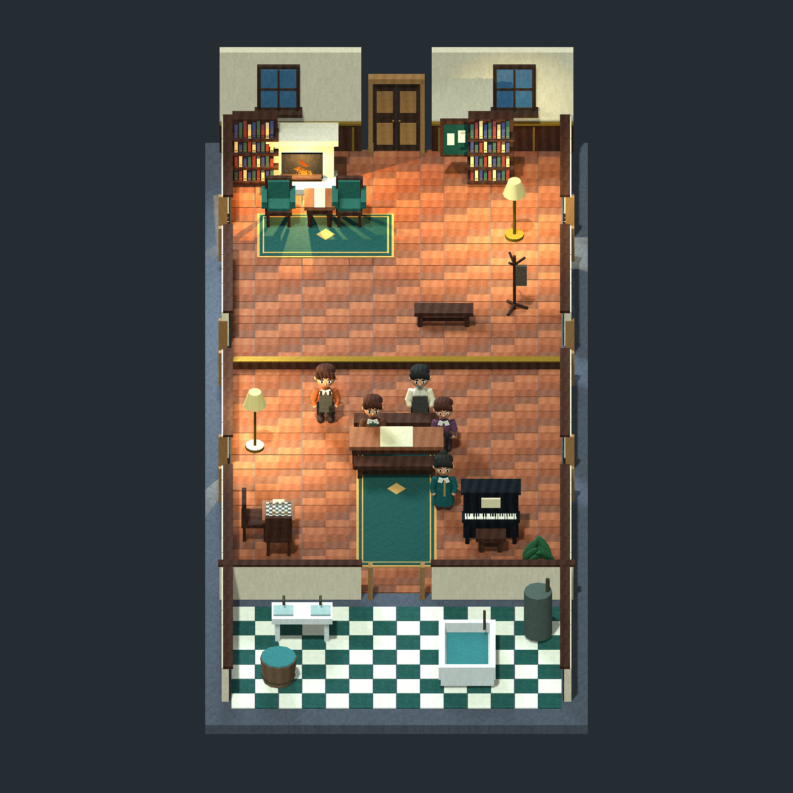
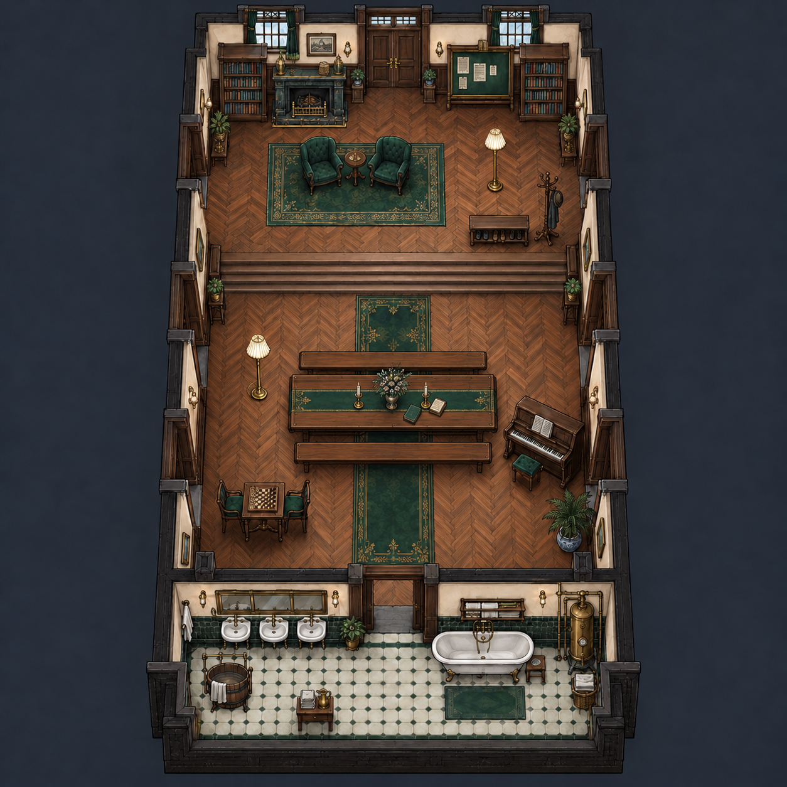
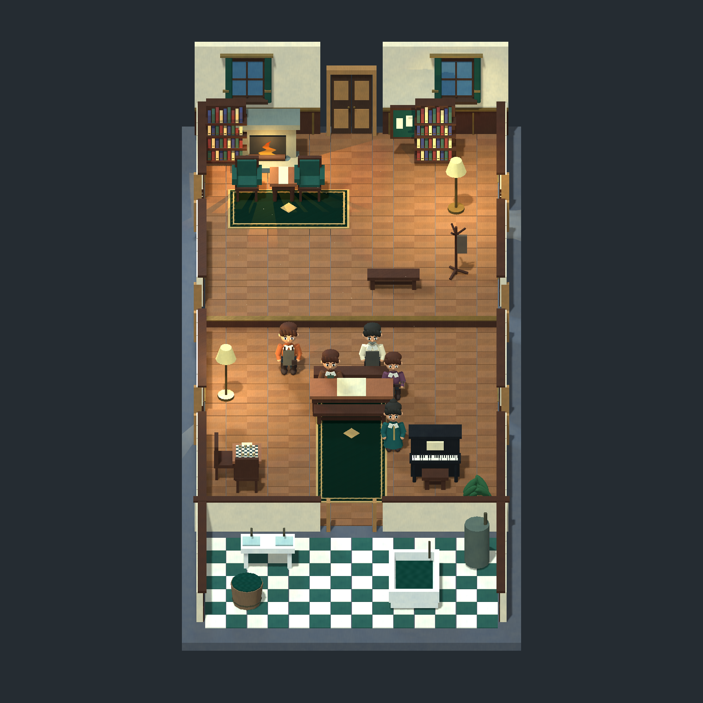
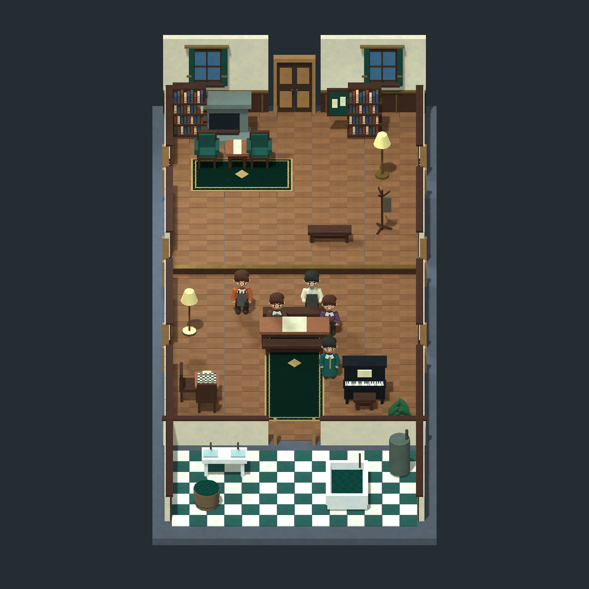
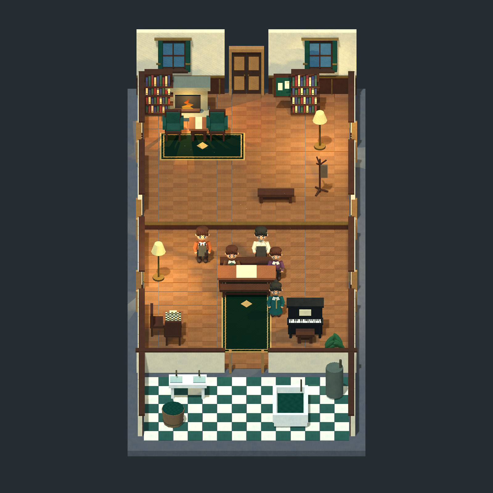

2026-10-26。目标：D 的正交空间、三头身与实体家具，结合 A 的胡桃木、深绿织物、旧金饰边和柔和表面笔触。完整公共厅，当前画面为 Godot 1600×1600 直接渲染。



对象空间颜料变化、方向木纹、织纹与地毯边饰；Burley / GGX 粗糙表面、金属度、动态水面法线和连续火焰。真实三维窗帘及护墙细线。没有把 A 的整幅光影图贴到模型上。


已修正首轮墙面过重噪声，缩小地板色差，添加织纹边饰；地板仍是 D 的直铺木板。五人及桌沿遮挡保留，场景未裁掉南侧盥洗区。与 A 相比仍缺精细雕花、人字拼木、软垫曲面和作者勾线，阴影仍偏硬。人物为静姿，没有骨骼动画。仅完成美术样片，没有进行正式游戏输入、碰撞或 Core AI 验收。